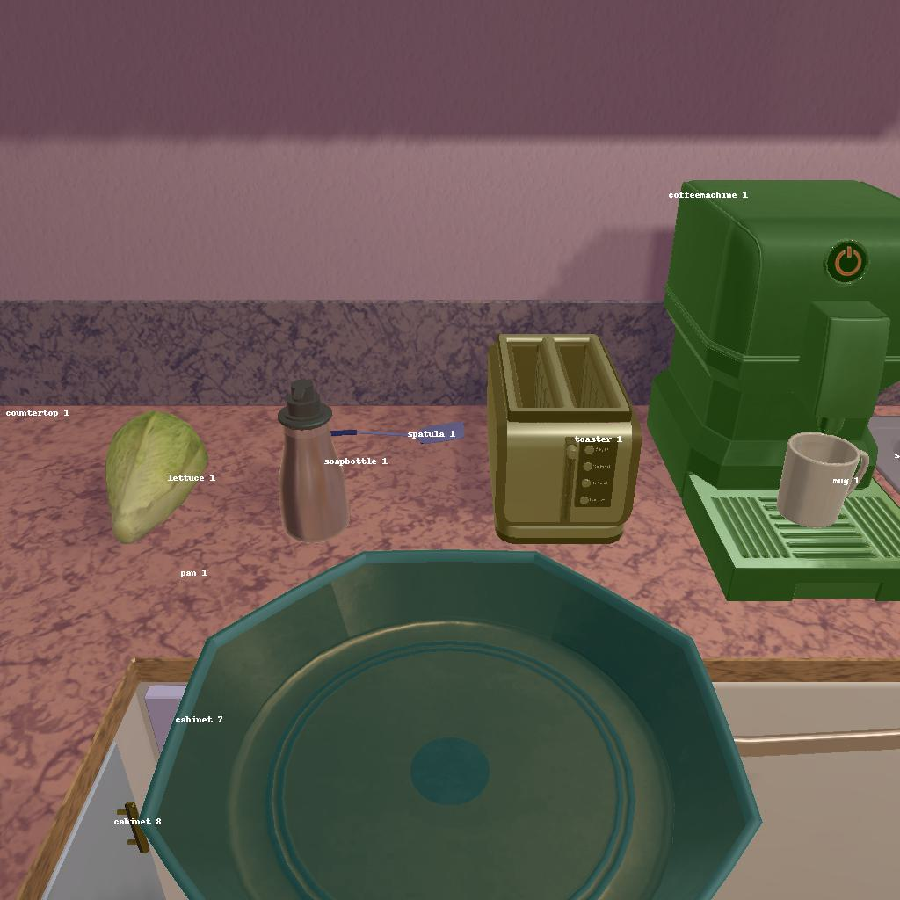

---------------------------------------------------------task: 18---------------------------------------------------------
--------------------------------------------------------------------------------------------------------------------------------------------------------------------
--------------------------------------------------------------------------------------------------------------------------------------------------------------------
Step:--------------------------------------------------------------------------7-------------------------------------------------------------------------------
----------------------------------------
VLM Prompt:
Image1:
**Instruction**
1. Analyze the provided image to identify all visible household objects, focusing on those relevant to the task description "cool some pot and put it in cabinet."
2. Use the analysis of the image and the task hint "The agent must find an object of the desired type, pick it up, go to a fridge, cool the object with the fridge, then find the correct location to place it, and put it down there. The agent does not need to use the fridge button or open the fridge to cool the object, and the agent just needs to do action that is "cool the object with the fridge"." to answer the question: what is the most reasonable action in the choices for the task description "cool some pot and put it in cabinet"?
4. Decide and write the answer using the template: The answer is: (i): , where i is the real number. If there is no desired object in the image, search every place based on **Initial Observation** to find the object. And if no one is exactly correct, choose a similar answer.
**Initial Observation**
You are in the middle of a room. Looking quickly around you, you can see cabinet (1-20), countertop (1-3), coffeemachine (1), toaster (1), sink (1), fridge (1), microwave (1), garbagecan (1), drawer (1-3), sinkbasin (1), stoveburner (1-4), shelf (1-3)
**Answer Choices**
(1): go to cabinet 1
(2): go to cabinet 2
(3): go to cabinet 3
(4): go to cabinet 4
(5): go to cabinet 5
(6): go to cabinet 6
(7): go to coffeemachine 1
(8): go to cabinet 7
(9): go to toaster 1
(10): go to cabinet 8
(11): go to sink 1
(12): go to microwave 1
(13): go to garbagecan 1
(14): go to cabinet 9
(15): go to cabinet 10
(16): go to countertop 2
(17): go to cabinet 11
(18): go to cabinet 12
(19): go to drawer 1
(20): go to countertop 3
(21): go to drawer 2
(22): go to cabinet 13
(23): go to sinkbasin 1
(24): go to cabinet 14
(25): go to drawer 3
(26): go to stoveburner 1
(27): go to stoveburner 2
(28): go to stoveburner 3
(29): go to cabinet 15
(30): go to stoveburner 4
(31): go to cabinet 16
(32): go to cabinet 17
(33): go to cabinet 18
(34): go to cabinet 19
(35): go to cabinet 20
(36): go to shelf 1
(37): go to shelf 2
(38): go to shelf 3
(39): put pan 1 in/on countertop 1
(40): examine pan 1
(41): examine countertop 1
**Answer**
Let's think step by step by following the instructions.
----------------------------------------
----------------------------------------
Original Response:
Firstly, we need to identify the pot that needs to be cooled. In the image, we can see a pan labeled as "pan 1" on the countertop labeled "countertop 1". Since the task is to cool some "pot" and the pan is the closest object to a pot in the image, we will consider "pan 1" as the object that needs to be cooled.
The task does not require us to interact with the fridge or its button, and we just need to perform an action that is "cool the object with the fridge". Therefore, we do not have to choose any action related to the fridge itself.
After cooling the object, we need to put it in a cabinet. The image shows two cabinets labeled "cabinet 6" and "cabinet 7" close to the countertop where the pan is located.
Considering the given options, the most reasonable action to perform the task description "cool some pot and put it in cabinet" would be to pick up the pan from the countertop and place it in one of the nearby cabinets.
Since "cabinet 6" and "cabinet 7" are the closest to the pan, and the task doesn't specify which cabinet to use, we can choose either of them. However, since we have to choose one action, let's go with the one immediately next to the pan.
The answer is: (6): go to cabinet 6.
----------------------------------------
----------------------------------------
>>> Refine Original VLM Response and Get Pure Action: go to cabinet 6
----------------------------------------
-----------------------------------------------------------------
Running time: 12.203527450561523 seconds
Total Money: 6.256580000000003
-----------------------------------------------------------------
-----------------------------------------------------------------
Text Observation:You arrive at loc 5. The cabinet 6 is closed.
-----------------------------------------------------------------
UNSUCCEED